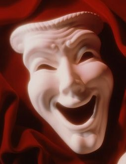
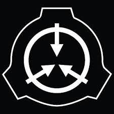
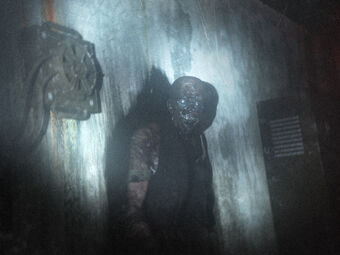
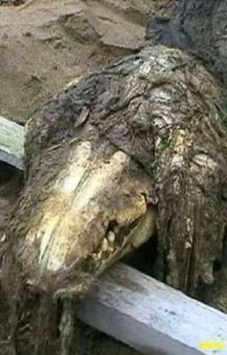
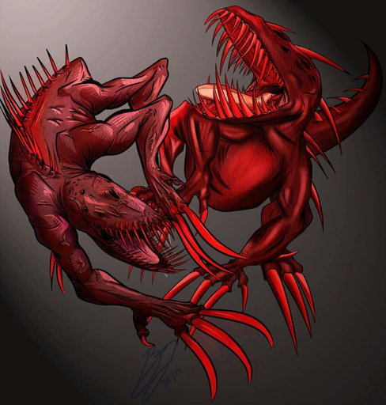
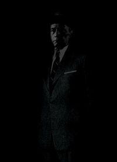
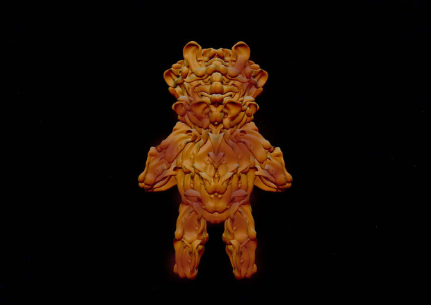
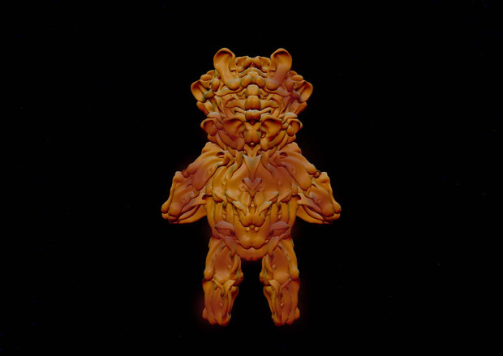

| Inicio | |
| SCP-035, La Máscara Posesiva | |
|  | El SCP-035 parece ser una máscara de comedia de porcelana blanca, aunque, a veces, se convertirá en tragedia. Durante estos eventos, todos los registros visuales existentes, como fotografías, secuencias de vídeo e incluso ilustraciones, de SCP-035 cambian automáticamente para reflejar su nueva apariencia. Los sujetos cercanos a SCP-035, o en contacto visual con él, experimentan una fuerte necesidad de ponérselo. Cuando SCP-035 se coloca en la cara de un individuo, un patrón de ondas cerebrales alternativas de SCP-035 se superpone con el del anfitrión original, apagándolo y causando muerte cerebral al sujeto. El sujeto entonces dice ser la conciencia contenida dentro de SCP-035. Los cuerpos de los sujetos "poseídos" decaen a un ritmo acelerado, llegando a ser poco más que cadáveres momificados. SCP-035 ha demostrado ser muy sádico, lo que ha llevado a algunos a suicidarse y a transformar a otros en sirvientes casi sin sentido con la persuasión lingüística sola. SCP-035 ha declarado que tiene un conocimiento profundo del funcionamiento de la mente humana e implica que podría cambiar las opiniones de cualquier persona si se le da el tiempo suficiente.
SCP-035 se puede encontrar en su cámara de contención, pegada a la cara de uno de los científicos de la Fundación. Cuando el Jugador ingrese a la sala de control adyacente a la cámara, SCP-035 se pondrá de pie y comenzará a conversar con este. Recorrerá la habitación y pedirá que lo liberen del confinamiento, indicando que si el Jugador abre la puerta, podrá ayudarlo a escapar de la instalación. También intentará demostrar que es confiable al darle al Jugador el código de acceso a la sala de almacenamiento, el cual contiene algunos objetos útiles. |
| SCP-055, ??? | |
|  | El SCP-055 es un "secreto auto-mantenido" o "anti-meme". La información acerca de la apariencia física de SCP-055, así como su naturaleza, comportamiento y orígenes, se desconoce. Actualmente es desconocido cómo fue obtenido, contenido y sobretodo, se desconoce qué es exactamente. Los miembros de personal de la fundación que salen de su cámara de contención olvidan todo lo referente al SCP-055 y todos los datos recopilados también son eliminados de forma misteriosa.
Al acabar el juego en la pantalla de SCP´s que el jugador logró contener aparece el SCP-055, lo que indica que en algún punto, el personaje se topo y contuvo al SCP-055 sin que se haya dado cuenta. |
| SCP-106, El Anciano | |
|  | El SCP-106 parece ser un humanoide anciano, con una apariencia general de descomposición avanzada. Esta apariencia puede variar, pero el estado de "putrefacción" se observa en todas las formas. El SCP-106 causa un efecto de "corrosión" en toda la materia sólida que toca, provocando una avería física en los materiales varios segundos después del contacto. Esto se observa como oxidación, pudrición, agrietamiento de materiales, y la creación de una sustancia viscosa negra, similar al material que recubre a SCP-106.SCP-106 es capaz de atravesar materia sólida, dejando un gran parche de su moco corrosivo. SCP-106 es capaz de "desaparecer" dentro de la materia sólida, ingresando lo que se supone que es una forma de "Dimensión de Bolsillo". SCP-106 puede salir de esta dimensión desde cualquier punto conectado al punto de entrada inicial (por ejemplo: si entra desde una pared, puede salir desde el el otro lado de dicha pared). Se desconoce si este es el punto de origen de SCP-106, o una simple "guarida" creada por SCP-106. El SCP-106 es una amenaza móvil, y aparece con bastante frecuencia. Puede engendrar en cualquier momento cerca del Jugador (ya sea desde el piso o desde el techo). Una vez que SCP-106 ha detectado al Jugador, inmediatamente comenzará a perseguirlo. |
| SCP-106, El Anciano | |
|  | El SCP-682 es una criatura enorme, vagamente parecida a un reptil, cuyos orígenes se desconocen. Esta parece ser extremadamente inteligente, y se le ha observado establecer comunicación avanzada con SCP-079 durante su limitado tiempo de exposición mutua. SCP-682 parece tener un gran odio hacia todas las formas de vida, el cual ha expresado durante las muchas entrevistas dadas durante su contención. SCP-682 siempre a demostrado niveles extremos de fuerza, velocidad y reflejos, aunque los niveles exactos varían con su forma. El cuerpo de SCP-682 crece y cambia muy rápido, creciendo o disminuyendo su tamaño tan rápido como consume o desecha material. SCP-682 gana energía de cualquier cosa que ingiera, orgánica o inorgánica. Las capacidades regenerativas y resistencia de SCP-682 son asombrosas, y SCP-682 ha sido visto moviéndose y hablando con al menos el 87% de su cuerpo destruido.
El SCP-682 no aparece como tal en el juego debido a que financiar los costos para crear un modelo 3d de una criatura tan grande serian muy elevados, sin embargo a lo largo del juego se puede escuchar a SCP-682 por todo el sitio, rugiendo, seguido de disparos, rugidos continuos y fuertes golpes, los que hacen que las instalaciones tiemblen ligeramente. Tambien se puede ver una muy breve aparición del SCP-682 en uno de los finales del juego, donde se ve una de sus extremidades derribando un helicoptero apache, momentos despúes se manda una bomba nuclear para intentar acabar con el reptil sin dar resultado alguno. |
| SCP-939, Con Muchas Voces | |
|  | El SCP-939 son depredadores endotérmicos basados en paquetes que muestran atrofia de varios sistemas similares a los organismos troglobíticos. La piel de las instancias de SCP-939 son altamente permeables a la humedad y al rojo translúcido, debido a un compuesto químicamente similar a la hemoglobina. SCP-939 tiene una altura promedio de 2.2 metros de pie y pesa en promedio 250 kg. Cada una de sus cuatro extremidades termina en garras de tres dedos con un cuarto dígito oponible. Las mandíbulas de SCP-939 están revestidas con dientes y colmillos rojos, levemente luminiscentes, similares a los que pertenecen a especímenes del género Chauliodus, de hasta 6 cm de longitud, y rodeados por órganos de pozo sensibles al calor. Las manchas oculares, sensibles a la luz y a la oscuridad, se extienden a lo largo de sus crestas dorsales espinadas. Estas espinas pueden tener hasta 16 cm de largo y se cree que son sensibles a los cambios en la presión y el flujo del aire.
El método principal de SCP-939 para atraer presas es la imitación del habla humana en las voces de víctimas anteriores, aunque se han documentado imitaciones de otras especies y cazas nocturnas activas. Las vocalizaciones SCP-939 a menudo implican una angustia significativa. A la presa generalmente se le puede asesinar con una sola mordida en el cráneo o el cuello. Se pueden encontrar tres especímenes de SCP-939 en el Área de almacenamiento 6. Cada uno patrullará el área en un patrón en el sentido de las agujas del reloj. Al acercarse a una instancia, imitará la voz de un Personal de la Fundación en un intento de atraer al Jugador hacia ella. Cuando vea al Jugador, lo perseguirá e intentará matarlos. |
| SCP-990, El Hombre de los Sueños | |
|  | El SCP-990 es generalemente un hombre humano vestido con un traje de negocios de la época de la Guerra Fría, que aparece al personal de la Fundación a través de los sueños. Hasta ahora, ningún miembro de la Fundación se ha encontrado con el SCP-990 en el mundo real; si corresponde a un ser humano real, aún no se ha encontrado. Actúalmente no ha habido informes de que SCP-990 aparezca para el personal que no forma parte de la Fundación.
SCP-990 aparece en las Pantallas de Carga, donde hablará con el Jugador como si estuviera soñando. En lugar de un extracto artículo de SCP-990, aparecerán mensajes vagos y consejos con caracteres aleatorios. |
| SCP-1048, Oso Constructor | |
 SCP-1048-A

SCP-1048-A

|
El SCP-1048 es un pequeño oso de peluche, de aproximadamente 33 cm de altura. Durante todas las pruebas, la composición del sujeto revelo que ningún atributo lo hacia discernible de un oso de peluche no-sapiente. El sujeto es capaz de moverse a su propia conformidad, y puede comunicarse mediante un pequeño rango de gestos. El sujeto a menudo mostrara afecto a los individuos de manera que la mayoría de personas encontrarían adorable. El afecto es normalmente dado en forma de un abrazo en la parte baja de la pierna, aunque el sujeto ha sido observado bailando, saltando en lugares, y en dos eventos separados incluso dibujando como un niño para el personal.
SCP-1048 puede ser encontrado deambulando sin rumbo alrededor del gran cuarto de pruebas. Si el jugador camina por hacia él, este comenzará a alejarse. Además ocasionalmente puede ser visto bailando en un escritorio dentro de los cuartos observatorios en los cuartos de control. Si el jugador aparta la mirada de él volteandose, este se ira. SCP-1048 además puede ser encontrado en plataformas triple de gas, haciendo dibujos con un lapiz y un papel. Si el jugador camina hacia él, sostendrá el dibujo que hizo, el cual el jugador puede tomar. Cada dibujo representa a D-9341 en alguna forma de peligro. Sin embargo, el objeto no es clasificado como Euclid por esos motivos, sino que él ha creado réplicas de él mismo con distinto materiales, siendo el más peligroso el SCP-1048-A, teniendo las mismas características que el original con la diferencia de que esta hecho de Orejas Humanas. La peligrosidad del SCP-1048-A se da cuando el jugador se topa con el, este comenzará a chillar, causando que la visión del jugador se agite y bultos similares a orejas se formaran sobre todo su cuerpo. Si el jugador permanece cerca de SCP-1048-A por demasiado tiempo luego de que el crecimiento comenzará a formarse, se sofocará. |